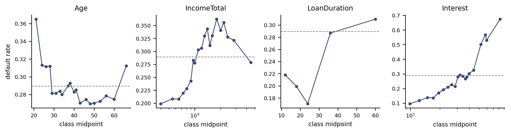

Credit Lecture F1: Classing, Characteristic Analysis and the Cost of a Step Function
Deep Learning for Actuarial Modelling: a credit risk companion
Author
Mario Ervedosa
Published
September 3, 2026
Abstract
Credit lecture 3 described the classical scorecard’s feature engineering in one paragraph and moved on, which left the activity that consumes most of a real probability-of-default build standing as a single sentence. This lecture runs the procedure instead. It fine classes, coarse classes by monotone adjacent pooling and by isotonic regression, screens on information value, treats missingness as an attribute, and assembles a characteristic analysis table into a fitted scorecard. Four findings come out of it. Borrower age, on which lectures 1 and 2 spent two exhibits and a merged band, scores an information value of 0.007 and would be screened out by any threshold in common use, because the monotonicity constraint reports a hump as noise. Holding the covariate list fixed, the classed and weight-of-evidence-encoded fit gives up about four tenths of an AUC point against lecture 2’s dummy-coded GLM, which is the price of the step function stated as a number. Lecture 1’s income paradox reappears as a sign flip on a weight-of-evidence coefficient, which turns out to be the diagnostic the procedure provides for exactly that failure. And a weight-of-evidence model retrained on its own predictions moves a fitted probability by up to 6.7 percentage points, where the dummy-coded model reproduces itself to thirteen decimal places.
1 What lecture 2 did without naming it
Two small engineering decisions were taken in the open in credit lecture 2, and both were named honestly at the time. The oldest age class, 71+, carried thirteen loans and no defaults at all. In a logistic GLM a class with no defaults drives its own coefficient towards minus infinity, since the likelihood keeps improving as the fitted probability of the class falls towards zero, so iteratively reweighted least squares runs to its iteration cap and returns a coefficient and a standard error that are numerical artefacts. Lecture 2 diagnosed that as quasi-complete separation and applied the remedy it called “coarser classes”, merging the two oldest bands into 61+. Separately, HomeOwnershipType was missing for 1,604 loans and EmploymentDurationCurrentEmployer for 820, and both were given an explicit missing level on the judgement that an applicant who skips a field differs from one who fills it in.
Credit lecture 3 then looked back at those decisions and described what they were:
The classical scorecard takes each candidate variable, bins it into coarse classes, replaces each class by its weight of evidence, and admits the variable only if the binning is monotone, populated at every level and stable across time. The procedure is transparent, auditable and slow, and every step of it is a decision recorded in a model development document.
That paragraph is the whole of this series’ account of an activity which, on a real retail build, occupies more calendar time than the modelling does. Lecture 3’s next move was to replace it with representation learning and measure what the replacement bought. This lecture goes the other way and runs the procedure by the book, because a comparison is only worth reading when both sides have been given a fair go.
Consequently the two decisions above stop being ad hoc repairs and become the first two entries in a method. Merging 71+ into 61+ is coarse classing under a minimum population constraint. Giving missingness its own level is the attribute treatment that the classical tradition has applied to bureau non-hits for forty years. Neither was invented in lecture 2, and this lecture supplies the procedure that both belong to.
2 Two traditions, one aim
Lecture 3 defined representation learning as the search for a map \(\varphi: \mathcal{X} \to \mathbb{R}^{q'}\) under which a simple model on \(\varphi(\boldsymbol{x})\) performs well. Classical credit feature engineering is the same search conducted by hand, and the industry runs it in two incompatible ways.
The first tradition discretises everything. Each candidate characteristic is cut into classes, each class is replaced by its weight of evidence, the classing is forced to be monotone in risk, and the characteristic is admitted only if its information value clears a threshold. Hence \(\varphi\) is a step function, its parameters are the class boundaries, and every one of those boundaries is a decision somebody signed.
The second tradition never bins at all. It treats coded exceptions and missing values first, caps the tails, and then straightens each covariate against the log-odds of default with a power transformation chosen from Tukey’s ladder, using the bulging rule to pick the direction. Redundancy is removed by clustering the correlation matrix and by dropping variables that load on a large condition index. Hence \(\varphi\) is a smooth monotone map with one parameter per covariate, and the model that follows keeps far more degrees of freedom for the regression itself.
Both traditions are live practice, both are documented to the standard a supervisor expects, and they disagree about the most basic question available, namely whether to throw away the ordering inside a class. This lecture runs the first tradition end to end and closes by putting one characteristic through both. Lecture F2 runs the second tradition on a portfolio wide enough to need it, and takes up selection, collinearity and the points scale.
2.1 Notation
Nothing here is renamed. Lecture 1 owns the snapshot \(\tau\), the origination month \(g_i\) and the window flag \(D^{(k)}_{i,t}\). Lecture 6 owns the level label \(a_k\), the interval \(I_k\), the level mean \(\overline{y}_k\), and the credibility weight \(\alpha_k\). Lecture R3 owns the dataset family \(\mathcal{D}\) and the sampling fraction \(s_f\).
This lecture adds the classing apparatus and nothing else. Within a characteristic, \(k\) indexes classes, \(n_k\) counts the rows in class \(k\), and \(n^B_k\) and \(n^G_k\) count its defaults and non-defaults. The characteristic index is \(\ell\), since \(j\) is spent as R3’s spell number.
WarningThe sign convention, which is the one thing easy to get wrong
Lecture 6 defines weight of evidence risk-positively, as the log of the class’s default odds relative to the portfolio’s, \[
\mathrm{WoE}_k = \log\frac{\overline{y}_k / (1 - \overline{y}_k)}
{\overline{y} / (1 - \overline{y})} ,
\] and observes that the conventional industry definition uses the good-to-bad ratio and therefore carries the opposite sign. This lecture keeps lecture 6’s convention throughout, so a positive weight of evidence always means elevated risk and a positive fitted coefficient always means the characteristic behaves as its classing said it would.
Information value is unaffected by the choice, because both factors in its summand change sign together. A reader comparing these tables against a vendor’s should therefore expect every weight of evidence to be negated and every information value to agree.
Lecture 6 also writes the Bühlmann shrinkage parameter as \(\tau \ge 0\), which collides with lecture 1’s snapshot date. This lecture needs neither, so it uses \(\tau\) for nothing and names lecture 6’s shrinkage parameter in words where it comes up.
3 The modelling sample, unchanged
Everything below runs on lecture 2’s modelling sample, constructed with lecture 2’s code, so that the classing is the only thing that can explain a difference in any number reported below.
import numpy as npimport polars as plimport pandas as pdimport matplotlib.pyplot as pltimport statsmodels.api as smimport statsmodels.formula.api as smffrom sklearn.isotonic import IsotonicRegressionfrom sklearn.metrics import roc_auc_scoreINK, MUTED, KEY, WARN ="#1A1A1A", "#8A8377", "#3B4A75", "#8C2F1E"dat = pl.read_parquet("../data/bondora_pd.parquet")model_dat = ( dat.filter(pl.col("Age").is_not_null() & (pl.col("IncomeTotal") >0)) .with_columns(logIncome=pl.col("IncomeTotal").log()) .filter(pl.col("Education") !=-1))g = model_dat.to_pandas()y = g["default_12m"].to_numpy()BASE =float(y.mean())print(f"modelling sample: n = {len(g):,}, default rate {BASE:.4f}")
modelling sample: n = 148,667, default rate 0.2894
The book defaults at just under 29 per cent. That figure is worth holding on to, because several rules of thumb in this tradition were written for portfolios two orders of magnitude cleaner and they behave oddly here. A minimum of twenty-five defaults per class, for instance, is a real constraint on a card book defaulting at 1.4 per cent and no constraint at all on this one.
4 Fine classing
Fine classing cuts a numeric characteristic into many narrow classes, typically ten or twenty on equal population, and computes the observed default rate in each. It commits to nothing. Its purpose is to let the modeller see the shape of the relationship before any smoothing is imposed on it, and the plot it produces is the single most-read exhibit in a scorecard development document.
def fine_class(x, n_fine=20):"""Equal-population fine classes. Returns class index and the cut points.""" ok =~pd.isna(x) q = np.unique(np.nanpercentile(x[ok], np.linspace(0, 100, n_fine +1))) idx = np.clip(np.searchsorted(q, x, side="right") -1, 0, len(q) -2)return np.where(ok, idx, -1), qdef class_table(idx, yy):"""One row per class: population, defaults, observed rate.""" idx = np.asarray(idx) ks = np.unique(idx)return pd.DataFrame({"k": ks,"n": [int((idx == k).sum()) for k in ks],"bad": [int(yy[idx == k].sum()) for k in ks],"rate": [float(yy[idx == k].mean()) for k in ks], })
Four characteristics carry the illustrations from here on. Age and IncomeTotal are the two lecture 1 modelled. LoanDuration is a contract term rather than a borrower attribute. Interest is the coupon Bondora itself set, and it is included deliberately as the leakage example section 6 needs.
FOUR = ["Age", "IncomeTotal", "LoanDuration", "Interest"]fig, axs = plt.subplots(1, 4, figsize=(9.5, 2.6))for ax, c inzip(axs, FOUR): x = g[c].to_numpy(dtype=float) idx, q = fine_class(x) t = class_table(idx, y) t = t[t.k >=0] mid = [float(np.median(x[idx == k])) for k in t["k"]] ax.plot(mid, t["rate"], "o-", ms=3, lw=1, color=KEY) ax.axhline(BASE, color=MUTED, ls="--", lw=0.8) ax.set_title(c, fontsize=9) ax.set_xlabel("class midpoint", fontsize=8)if c =="Age": ax.set_ylabel("default rate", fontsize=8)if c in ("IncomeTotal", "Interest"): ax.set_xscale("log") ax.tick_params(labelsize=7)for s in ("top", "right"): ax.spines[s].set_visible(False)plt.tight_layout(); plt.show()

Observed twelve-month default rate by twenty equal-population fine classes, plotted against the class’s population-weighted midpoint on the characteristic’s own scale. The dashed line is the portfolio rate. Age is plainly non-monotone; interest rate is monotone and very steep; loan duration takes five distinct values only, so its fine classing collapses.
Age falls sharply from the youngest class, flattens across middle age, and turns back up towards the oldest borrowers, reproducing the hump lecture 1 recovered and lecture 2 approximated with seven bands. Income rises with default risk, giving lecture 1’s paradox, and it remains wrong-signed until country enters. Loan duration has only five distinct values on this book, so twenty requested classes collapse to five and the fine classing has nothing to do. Interest climbs from about 11 per cent default in its cheapest class to about 67 per cent in its dearest.
5 Coarse classing, and three algorithms
Coarse classing merges the fine classes into a handful that a scorecard can carry, subject to two constraints that pull against each other. Every class must hold enough rows to estimate its own default rate, and the sequence of rates must be monotone in the characteristic. The reason for the first is statistical, and section 8 makes it concrete. The reason for the second is discussed in section 7, where it turns out to rest on less than practitioners usually claim.
5.1 Monotone adjacent pooling
The standard algorithm walks the fine classes, finds a pair whose rates violate monotonicity, merges them, and repeats until no violation remains. It is short enough to read in full, and its merge order is the part that matters, since a different choice of which violation to fix first gives a different final classing on the same data.
def mapa(n_tot, n_bad, min_n, direction):"""Monotone adjacent pooling. Under-populated classes are merged into their smaller neighbour first; then the least informative monotonicity violation, i.e. the adjacent pair whose rates are closest, is merged repeatedly.""" nt, nb =list(n_tot), list(n_bad) grp = [[i] for i inrange(len(nt))]whilelen(nt) >1: rate = [nb[i] / nt[i] for i inrange(len(nt))] small = [i for i inrange(len(nt)) if nt[i] < min_n]if small: i =min(small, key=lambda i: nt[i]) j = (i -1if i ==len(nt) -1else i +1if i ==0else i -1if nt[i -1] < nt[i +1] else i +1)else: viol = [i for i inrange(len(nt) -1)if (rate[i +1] - rate[i]) * direction <0]ifnot viol:break i =min(viol, key=lambda i: abs(rate[i +1] - rate[i])) j = i +1 a, b =min(i, j), max(i, j) nt[a:b +1] = [nt[a] + nt[b]] nb[a:b +1] = [nb[a] + nb[b]] grp[a:b +1] = [grp[a] + grp[b]]return np.array(nt), np.array(nb), grp
The direction argument is the sign the classing is forced into, and the choice to pass it in is deliberate. A production classing takes its direction from the risk story, so that a characteristic whose sample trend contradicts the economics is flagged instead of accommodated. Inferring the sign from the sample, as the helper below does by default, quietly accommodates it.
5.2 Weight of evidence and information value
With the classes fixed, each receives its weight of evidence and the characteristic receives an information value, defined as the sum over classes of the difference between the default and non-default shares, weighted by the log of their ratio.
def woe_iv(n_tot, n_bad, half=0.5):"""Risk-positive weight of evidence per lecture 6, and information value. `half` adds half a row of each outcome to every class, which keeps the logarithm finite when a class holds no defaults.""" n_good = n_tot - n_bad p_bad = (n_bad + half) / (n_bad.sum() + half *len(n_bad)) p_good = (n_good + half) / (n_good.sum() + half *len(n_good)) woe = np.log(p_bad / p_good) iv =float(((p_bad - p_good) * woe).sum())return woe, iv
The half-count adjustment in the denominator deserves a sentence, since it is doing real work and is easy to mistake for a rounding convenience. A class with no defaults sends the weight of evidence to minus infinity, which is the same failure lecture 2 met as quasi-complete separation, arriving one step earlier in the pipeline. Adding half a row of each outcome to every class bounds the logarithm and leaves a well-populated class essentially untouched, and it is the reason a scorecard team can run the arithmetic on a sparse level without the software falling over. It does not make the resulting estimate trustworthy, and section 8 is about what to do instead.
5.3 Isotonic regression, for comparison
Monotone adjacent pooling is not the only route to a monotone profile. Isotonic regression fits the best non-decreasing step function to the fine-class rates in weighted least squares, and the number of distinct levels it settles on is its answer to how many classes the data supports. Since scikit-learn is already pinned, this one is a library call rather than a reimplementation.
def coarse(x, yy, min_frac=0.05, n_fine=20, direction=None):"""Fine class, then coarse class by MAPA. Returns the edge vector.""" idx, q = fine_class(x, n_fine) t = class_table(idx, yy) core = t[t.k >=0].reset_index(drop=True) r = core["rate"].to_numpy()if direction isNone: direction =1if np.corrcoef(np.arange(len(r)), r)[0, 1] >0else-1 _, _, grp = mapa(core["n"].to_numpy(), core["bad"].to_numpy(),int(min_frac *len(x)), direction) ks = core["k"].to_numpy()return np.array([q[ks[0]]] + [q[ks[gr[-1]] +1] for gr in grp]), directionrows = []for c in FOUR + ["ExistingLiabilities", "MonthlyPayment","NoOfPreviousLoansBeforeLoan", "DebtToIncome"]: x = g[c].to_numpy(dtype=float) idx, q = fine_class(x) t = class_table(idx, y) core = t[t.k >=0].reset_index(drop=True) _, iv_fine = woe_iv(core["n"].to_numpy(), core["bad"].to_numpy()) edges, direction = coarse(x, y) ci = np.clip(np.searchsorted(edges, x, side="right") -1, 0, len(edges) -2) tc = class_table(ci, y) _, iv_coarse = woe_iv(tc["n"].to_numpy(), tc["bad"].to_numpy()) iso = IsotonicRegression(increasing=(direction >0)).fit_transform( np.arange(len(core)), core["rate"].to_numpy(), sample_weight=core["n"].to_numpy()) rows.append(dict(characteristic=c, fine=len(core), IV_fine=round(iv_fine, 4), MAPA=len(tc), IV_coarse=round(iv_coarse, 4), isotonic=len(np.unique(np.round(iso, 10)))))print(pd.DataFrame(rows).to_string(index=False))
Two things in that table are worth stopping on. Monotone adjacent pooling and isotonic regression disagree about the class count on almost every characteristic, which is the validation point the risk-factor binning literature makes and which a validator assessing rating-scale granularity has to price in: the number of classes is a property of the algorithm the team chose as much as of the risk driver. Furthermore the information value falls every time classes are merged, and on some characteristics it falls a long way. Coarse classing is a lossy compression, and the loss is measurable.
6 Information value, and what it cannot see
Information value is the screening statistic of the discretise tradition. It is computed once per candidate characteristic, before any multivariate work, and a threshold decides what survives to selection. The bands in common use put anything below 0.02 beyond consideration, 0.02 to 0.10 as weak, 0.10 to 0.30 as medium, 0.30 to 0.50 as strong, and anything above 0.50 under suspicion of leakage.
NoteTwo qualifications those bands need, and rarely get
The bands circulate widely and are usually attributed to the standard scorecard texts. This lecture states them as common practice and attributes them to nobody, because they were not verified against a primary source during its preparation, and two properties limit what they can be asked to do.
Information value depends on the class count. Adding classes cannot reduce it and usually raises it, as the table in section 5 shows on every row. Consequently comparing the information value of a nine-class characteristic against a three-class one ranks the classings at least as much as the characteristics, and a league table is only meaningful when the class counts are comparable.
A high value is as informative as a low one. The upper band exists because a characteristic that separates default too well is usually measuring the outcome, and that reading is confirmed below.
def cat_labels(s):"""Categorical labels with missingness promoted to its own class."""return s.astype("object").where(s.notna(), "missing").astype(str).to_numpy()screen = []for c in ["Age", "IncomeTotal", "LoanDuration", "Interest", "DebtToIncome","FreeCash", "LiabilitiesTotal", "ExistingLiabilities","AppliedAmount", "MonthlyPayment", "NoOfPreviousLoansBeforeLoan","ApplicationSignedHour"]: x = g[c].to_numpy(dtype=float) edges, _ = coarse(x, y) ci = np.clip(np.searchsorted(edges, x, side="right") -1, 0, len(edges) -2) t = class_table(np.where(pd.isna(x), -1, ci), y) _, iv = woe_iv(t["n"].to_numpy(), t["bad"].to_numpy()) screen.append(dict(characteristic=c, kind="numeric", classes=len(t), smallest=int(t["n"].min()), IV=round(iv, 4)))for c in ["Country", "Rating", "Education", "HomeOwnershipType", "Gender","NewCreditCustomer", "VerificationType", "MaritalStatus","EmploymentDurationCurrentEmployer", "EmploymentStatus","OccupationArea", "UseOfLoan", "LanguageCode"]: lab = cat_labels(g[c]) t = class_table(lab, y) _, iv = woe_iv(t["n"].to_numpy(), t["bad"].to_numpy()) screen.append(dict(characteristic=c, kind="categorical", classes=len(t), smallest=int(t["n"].min()), IV=round(iv, 4)))sc = pd.DataFrame(screen).sort_values("IV", ascending=False)print(sc.to_string(index=False))
Read that table as a scorecard team would, from the top down and with suspicion.
Two characteristics clear 0.50 and fail on provenance. Rating is Bondora’s own risk grade, so it records the platform’s opinion of the loan and no attribute of the borrower reaches it. Interest is the coupon the platform charged, which was set from that same grade, and lecture 1’s data notes already record that it rank-orders default from about 9 per cent below a 10 per cent coupon to about 78 per cent above 100 per cent. Both are the outcome of an underwriting decision the model is supposed to be replacing, and admitting either would produce a scorecard whose real target is Bondora’s pricing.
Country clears 0.50 as well, on four levels, and it survives. Nothing about a country of residence is downstream of the credit decision, the level populations run to tens of thousands, and lecture 1 established that country is the confounder driving the income paradox. A characteristic can be very strong and legitimate, so the upper band is a prompt to check provenance before it is grounds to drop.
LanguageCode fails on redundancy instead. Its information value of about 0.538 sits within a whisker of Country’s 0.533, and Bondora’s language field is very largely a restatement of the borrower’s country. Admitting both would put two readings of one fact into the same model, and lecture F2 takes up that collinearity problem with the machinery to detect it. Additionally it carries thirteen levels of which several hold single-digit populations, and section 8 uses it to show what such levels do and, more usefully, what they turn out not to do.
6.1 What the screen does to age
The result at the bottom of the table is the one worth the lecture.
x = g["Age"].to_numpy(dtype=float)edges_mono, _ = coarse(x, y)ci = np.clip(np.searchsorted(edges_mono, x, side="right") -1, 0, len(edges_mono) -2)t_mono = class_table(ci, y)_, iv_mono = woe_iv(t_mono["n"].to_numpy(), t_mono["bad"].to_numpy())# a two-arm classing: split at a turning point, then force each arm monotonebest =Nonefor cut inrange(30, 60): lo, hi = x <= cut, x > cut parts = []for m, d in ((lo, -1), (hi, +1)): e, _ = coarse(x[m], y[m], min_frac=0.03, n_fine=10, direction=d) cj = np.clip(np.searchsorted(e, x[m], side="right") -1, 0, len(e) -2) tt = class_table(cj, y[m]) parts.append((tt["n"].to_numpy(), tt["bad"].to_numpy())) nt = np.concatenate([p[0] for p in parts]) nb = np.concatenate([p[1] for p in parts]) _, iv2 = woe_iv(nt, nb)if best isNoneor iv2 > best[1]: best = (cut, iv2, len(nt))print(f"age, forced monotone : {len(t_mono)} classes, IV {iv_mono:.4f}")print(f"age, split at {best[0]:<9}: {best[2]} classes, IV {best[1]:.4f}"f" ({best[1] / iv_mono:.2f} times the monotone value)")print(f"either way, the 0.02 screening floor is not cleared")
age, forced monotone : 5 classes, IV 0.0066
age, split at 41 : 9 classes, IV 0.0109 (1.64 times the monotone value)
either way, the 0.02 screening floor is not cleared
Borrower age scores an information value below 0.01. Lectures 1 and 2 gave age two exhibits, seven hand-chosen bands, and a merged tail, and the classical univariate screen would have dropped it before selection began.
The first reason is the monotonicity constraint. Age is hump-shaped on this book, so forcing a monotone profile makes the algorithm merge away either the young peak or the old rise, and a characteristic whose two ends both carry elevated risk reports almost no separation once it is required to move in one direction only. Splitting age at a turning point and forcing each arm monotone separately, the standard remedy for a U-shaped risk profile, recovers a good deal of the lost information value. However, it does not recover enough to clear the floor, so the honest conclusion is that the remedy helps and does not rescue.
The second reason is more interesting and the screen cannot reach it. Age’s contribution on this book is conditional, in that it matters once income and country are held fixed, and a univariate statistic computed one characteristic at a time is blind to any such effect by construction. Lecture F2 takes up marginal information value, which is the tradition’s own answer to precisely this gap, and lecture C1 shows what conditioning does to the age and income surface. For now the finding is a limitation of the screen. A characteristic can be worth modelling and still score nothing univariately.
7 Monotonicity, which no regulation requires
Practitioners defend the monotonicity constraint on three grounds, and it is worth separating them, because one of the three is commonly overstated to the point of being wrong.
The statistical ground is stability. A wiggly weight-of-evidence profile is fitting sampling noise in the middle classes, and a profile fitted to noise in the development window will not reproduce in the out-of-time window. Forcing monotonicity is a strong regularisation, and it is chosen for the same reason any regularisation is, namely that a slightly biased estimator with much lower variance predicts better out of sample.
The business ground is coherence. A scorecard whose points fall and then rise across adjacent income classes cannot be explained to a credit committee, and a model that cannot be explained will not be approved. Scallan’s triple test makes this explicit by requiring that a characteristic’s risk pattern be economically interpretable alongside its statistical credentials, and it is the criterion no statistic can substitute for.
ImportantNo regulation mandates a monotone weight-of-evidence profile
The third ground offered is regulatory, and it does not survive checking. Monotonicity is routinely attributed to CRR Article 174, and Article 174(c) is in fact the requirement that the data used to build a model be representative of the actual population of obligors, which lecture R3 quotes in black letter and builds a section around. It says nothing about the shape of a risk profile.
Consequently a model development document should defend monotonicity on the stability and coherence arguments above, and should not cite an article for a requirement the article does not contain. Where the underlying risk really is U-shaped, as it is for age here and as it commonly is for loan-to-value, a two-arm classing is the better answer and there is no regulatory obstacle to using one.
8 Small classes, and the thirteen loans
Return to the lecture 2 episode, since the arithmetic behind it generalises.
tail = g[g["Age"] >70]print(f"Age > 70: n = {len(tail)}, defaults = {int(tail['default_12m'].sum())}")lang = cat_labels(g["LanguageCode"])tl = class_table(lang, y).sort_values("n")print("\nLanguageCode, the four smallest levels:")print(tl.head(4).to_string(index=False))_, iv_lang = woe_iv(tl["n"].to_numpy(), tl["bad"].to_numpy())big = tl[tl["n"] >=500]_, iv_big = woe_iv(big["n"].to_numpy(), big["bad"].to_numpy())print(f"\nIV on all {len(tl)} levels : {iv_lang:.4f}")print(f"IV on the {len(big)} levels above 500 rows: {iv_big:.4f}")
Age > 70: n = 13, defaults = 0
LanguageCode, the four smallest levels:
k n bad rate
10 1 1 1.0
13 1 1 1.0
15 1 1 1.0
21 1 0 0.0
IV on all 13 levels : 0.5381
IV on the 5 levels above 500 rows: 0.5327
Thirteen loans and no defaults is what quasi-complete separation looks like from the data side, and it is not confined to the age tail. LanguageCode presents the same pathology in a categorical characteristic. Three of its thirteen levels hold a single loan each, and among the levels below 500 rows there is one with no defaults at all. Each of those is an unbounded weight of evidence waiting to happen, and the only reason the arithmetic above returned a finite number is the half-count adjustment of section 5.
The obvious next question is whether those levels are also manufacturing the characteristic’s information value, and the printed answer is that they are not. Dropping every level below 500 rows moves the information value from 0.5381 to 0.5327, a relative change of about one per cent, so essentially all of the separation is coming from the well-populated levels. That is worth dwelling on for two reasons. The diagnostic is cheap and it should be run on any characteristic whose value looks surprising, because a value carried by its smallest classes is an artefact. Here it comes back clean, which means the case for merging those singletons rests on estimation stability alone. A weight of evidence computed from one loan will not reproduce on any other sample, whatever it contributes to a summary statistic today.
Two remedies exist and they are complements. The classical one is a minimum population constraint, applied during classing, which merges any under-populated class into a neighbour. It is easy to document and it destroys the class’s identity. Lecture 6 sets out the alternative, which shrinks each class mean towards the portfolio mean in proportion to the data standing behind it, and thereby keeps the identity while borrowing strength. Bondora’s default rate of nearly 29 per cent makes the population constraint the binding one here, since a class large enough to be stable will comfortably hold defaults. On the 1.4 per cent card portfolio of lecture 3 the defaults bind first, and that is the setting the twenty-five-defaults rule of thumb was written for.
For an unordered categorical there is no adjacency to merge along, so the standard algorithm merges the pair of levels whose combination costs the least information value, which for an under-populated level means the surviving level whose weight of evidence is closest to its own.
def merge_levels(lab, yy, min_n, half=0.5, protect=("missing",), min_out=25):"""IV-driven merging for categorical levels. Repeatedly take the smallest under-populated level and merge it into the level whose weight of evidence is nearest, which is the merge that loses the least information value. A level named in `protect` survives the population floor provided it holds at least `min_out` of each outcome. Missingness is protected on that basis because section 9's argument is that it carries its own risk, and the reason the exemption is conditional rather than absolute is that the floor exists to make a weight of evidence estimable: 25 defaults and 25 non-defaults is the classical minimum, and a missing attribute clearing it is estimable whatever share of the book it holds.""" lab = np.asarray(lab, dtype=object).copy()whileTrue: t = class_table(lab, yy) safe = {str(t["k"].iloc[i]) for i inrange(len(t))ifstr(t["k"].iloc[i]) in protectandmin(t["bad"].iloc[i], t["n"].iloc[i] - t["bad"].iloc[i]) >= min_out} under = [i for i inrange(len(t))if t["n"].iloc[i] < min_n andstr(t["k"].iloc[i]) notin safe]iflen(t) <=2ornot under:return lab w, _ = woe_iv(t["n"].to_numpy(), t["bad"].to_numpy(), half) src =min(under, key=lambda i: t["n"].iloc[i]) cand = [i for i inrange(len(t))if i != src andstr(t["k"].iloc[i]) notin safe]ifnot cand:return lab tgt =min(cand, key=lambda i: abs(w[i] - w[src])) a, b =str(t["k"].iloc[src]), str(t["k"].iloc[tgt]) merged ="+".join(sorted(set(a.split("+")) |set(b.split("+")))) lab[(lab == t["k"].iloc[src]) | (lab == t["k"].iloc[tgt])] = mergedMIN_LEVEL =int(0.01*len(g))for c in ["LanguageCode", "HomeOwnershipType", "OccupationArea", "Country"]: raw = cat_labels(g[c]) mg = merge_levels(raw, y, MIN_LEVEL) t0, t1 = class_table(raw, y), class_table(mg, y) _, iv0 = woe_iv(t0["n"].to_numpy(), t0["bad"].to_numpy()) _, iv1 = woe_iv(t1["n"].to_numpy(), t1["bad"].to_numpy())print(f"{c:<20}{len(t0):>3} levels (smallest {t0['n'].min():>6,}, IV {iv0:.4f})"f" -> {len(t1):>2} (smallest {t1['n'].min():>6,}, IV {iv1:.4f})")
LanguageCode 13 levels (smallest 1, IV 0.5381) -> 4 (smallest 14,454, IV 0.5365)
HomeOwnershipType 12 levels (smallest 38, IV 0.0907) -> 10 (smallest 1,540, IV 0.0903)
OccupationArea 22 levels (smallest 3, IV 0.0187) -> 10 (smallest 1,933, IV 0.0177)
Country 4 levels (smallest 296, IV 0.5334) -> 3 (smallest 26,564, IV 0.5323)
A one per cent floor is the constraint here, and it costs remarkably little information value on any of the four. OccupationArea more than halves its level count and gives up around five per cent of its value in relative terms, while LanguageCode collapses from thirteen levels to four for a loss in the third decimal place, confirming again that its smallest levels were contributing almost nothing.
Country loses a level too, and the level it loses is the one the series has already had trouble with. Slovakia holds a few hundred loans here, and lecture R1 excluded it from the macroeconomic fit outright, on the ground that its Bondora risk set has a median of seventeen loans a month. The merge reaches the same verdict by a different route and folds it into Spain, whose default rate is the nearest of the three. Hence the algorithm is not being clever; it is recovering a judgement a modeller had already made by eye two lectures earlier.
The scorecard fitted in the next section applies this merge to every categorical characteristic, so that the table it prints contains no class too small to defend.
9 Missing values, and a zero that means nothing
The discretise tradition handles missingness by promoting it to a class. That is cheap, since a step function has room for one more step, and it is right whenever missingness carries information. The standard taxonomy distinguishes three cases: values missing at random, where the missingness is unrelated to the value itself; values missing not at random, where the missingness is systematically related to what is missing; and structural missingness, where the field does not apply, as a loan-to-value ratio does not apply to an unsecured loan.
for c in ["HomeOwnershipType", "EmploymentDurationCurrentEmployer"]: m = g[c].isna().to_numpy()print(f"{c:<36} missing {m.sum():>6,} rate {y[m].mean():.4f}")z = (g["DebtToIncome"] ==0).to_numpy()print(f"{'DebtToIncome == 0':<36} n {z.sum():>6,} rate {y[z].mean():.4f}")print(f"{'DebtToIncome > 0':<36} n {(~z).sum():>6,} rate {y[~z].mean():.4f}")print(f"{'portfolio':<36} rate {BASE:.4f}")
Lecture 2’s instinct is vindicated on both fields. Applicants who left home ownership or employment duration blank defaulted at appreciably below the portfolio rate, so the missingness is informative and it is informative in the direction that a naive imputation would have destroyed. Filling those rows with the modal category would have moved them into a class whose risk they do not share, and the model would have lost a real signal in exchange for a complete data matrix.
One consequence of promoting missingness to a class is that it then has to survive the population floor of section 8, and the merge above protects it conditionally rather than absolutely. Employment duration’s missing attribute holds 664 loans and about 160 defaults, comfortably enough to estimate a weight of evidence, so it stays. Occupation area’s holds 41 loans and five defaults, so it does not, and the algorithm folds it into the level it most resembles. Consequently estimability governs the exemption.
DebtToIncome is the opposite case and it is the one this tradition is built to catch. Over three quarters of the book records a debt-to-income ratio of exactly zero, which no lender believes of three quarters of its applicants. The zero is a coded absence rather than a measurement. Nevertheless the classical test is empirical. The zero group and the positive group default at rates close enough together that the distinction carries almost nothing, which is why the characteristic screens out at an information value near 0.005. Here the coded value turned out to be uninformative, and the point of testing it is that it might not have been.
NoteWhat travels from the bureau case, and what does not
The production version of this step is written for bureau feeds, where a vendor reserves specific numeric codes for a non-hit or a not-applicable response. The transferable rule has three parts. Ignore a coded value holding one per cent of the book or less. Above that, cut the valid range into deciles, compare the observed default rate at each end, and establish the direction of risk. Then, where the coded value sits outside the monotone trend, place it at an artificial value beyond the valid range so that the classing stays monotone, and plot the default rates before and after to prove that it does.
Bondora carries no vendor codes, so the illustration above uses its own zero and null sentinels. A named vendor’s code list belongs to the engagement it came from and does not travel here.
10 The characteristic analysis table, and a scorecard
A characteristic analysis table is the deliverable of everything above. One block per characteristic, one row per class, and for each row the population, its share, the defaults, the observed rate, and the weight of evidence, with the information value totalled per block. Every scorecard sign-off in the industry rests on a document containing this table, and its readability is the tradition’s strongest claim.
def build_woe(learn, frames, num_cols, cat_cols, min_frac=0.05, min_level_frac=0.01):"""Learn class boundaries, level groupings and WoE maps on `learn` only, then apply all three to every frame. Estimating on the learning sample alone is what keeps the out-of-time readout honest, for the reason lecture 6's leakage section sets out.""" yl = learn["default_12m"].to_numpy() min_level =int(min_level_frac *len(learn)) edges, group, maps, ivs = {}, {}, {}, {}for c in num_cols: e, _ = coarse(learn[c].to_numpy(dtype=float), yl, min_frac=min_frac) edges[c] = e maps[c], ivs[c] = woe_lookup( num_labels(learn[c].to_numpy(dtype=float), e), yl)for c in cat_cols: raw = cat_labels(learn[c]) merged = merge_levels(raw, yl, min_level) group[c] =dict(zip(raw, merged)) maps[c], ivs[c] = woe_lookup(merged, yl) out = []for fr in frames: d = pd.DataFrame(index=range(len(fr)))for c in num_cols: lab = num_labels(fr[c].to_numpy(dtype=float), edges[c]) d["w_"+ c] = [maps[c].get(v, 0.0) for v in lab]for c in cat_cols: lab = [group[c].get(v, v) for v in cat_labels(fr[c])] d["w_"+ c] = [maps[c].get(v, 0.0) for v in lab] d["y"] = fr["default_12m"].to_numpy() out.append(d)return out, ivs, maps, (edges, group)def num_labels(x, edges): ci = np.clip(np.searchsorted(edges, x, side="right") -1, 0, len(edges) -2)return np.where(pd.isna(x), "missing", ci.astype(str))def woe_lookup(lab, yy, half=0.5): t = class_table(lab, yy) w, iv = woe_iv(t["n"].to_numpy(), t["bad"].to_numpy(), half)returndict(zip(t["k"], w)), iv
The characteristics are the eight lecture 2 fitted, held fixed on purpose. Comparing a classed model against lecture 2’s on a different characteristic list would measure the list and the classing at once, so the list stays put and the classing is the only thing that moves.
g["HomeOwnership"] = np.where( g["HomeOwnershipType"].isna() | (g["HomeOwnershipType"] ==-1), "missing", g["HomeOwnershipType"].fillna(-1).astype(int).astype(str))g["EmploymentDuration"] = g["EmploymentDurationCurrentEmployer"].fillna("missing")g["AgeClass"] = pd.cut(g["Age"], [18, 20, 25, 30, 40, 50, 60, 101], labels=["18-20", "21-25", "26-30", "31-40", "41-50","51-60", "61+"], include_lowest=True)NUM = ["Age", "logIncome"]CAT = ["Country", "Education", "HomeOwnership", "NewCreditCustomer","VerificationType", "EmploymentDuration"]rng = np.random.default_rng(1)perm = rng.permutation(len(g))n_learn =int(0.8*len(g))g_rand = g.iloc[perm].reset_index(drop=True)learn_r, test_r = g_rand.iloc[:n_learn], g_rand.iloc[n_learn:]cutoff = g["LoanDate"].quantile(0.8)learn_t, test_t = g[g["LoanDate"] <= cutoff], g[g["LoanDate"] > cutoff](dl, dt), ivs, maps, (edges, group) = build_woe( learn_r, [learn_r, test_r], NUM, CAT)blocks = []for c in NUM + CAT: lab = (num_labels(learn_r[c].to_numpy(dtype=float), edges[c]) if c in NUMelse [group[c].get(v, v) for v in cat_labels(learn_r[c])]) t = class_table(lab, learn_r["default_12m"].to_numpy()) t["share"] = t["n"] / t["n"].sum() t["WoE"] = [maps[c][k] for k in t["k"]] t.insert(0, "characteristic", c) t["IV"] =round(ivs[c], 4) blocks.append(t)ca = pd.concat(blocks)[["characteristic", "k", "n", "share", "bad", "rate","WoE", "IV"]]print(ca.to_string(index=False, formatters={"share": "{:.3f}".format, "rate": "{:.4f}".format,"WoE": "{:+.4f}".format}))
def report(tag, obs, pred): dev =-2* np.sum(obs * np.log(np.clip(pred, 1e-12, 1)) + (1- obs) * np.log(np.clip(1- pred, 1e-12, 1)))print(f" {tag:<26} dev/n {dev /len(obs):.5f} AUC "f"{roc_auc_score(obs, pred):.4f} mean pred {pred.mean():.4f}")FORMULA = ("default_12m ~ AgeClass + logIncome + Country + C(Education)"" + C(HomeOwnership) + NewCreditCustomer + C(VerificationType)"" + C(EmploymentDuration)")for name, (lrn, tst) in {"random": (learn_r, test_r),"out-of-time": (learn_t, test_t)}.items():print(f"{name} split, test default rate {tst['default_12m'].mean():.4f}") b = smf.glm(FORMULA, data=lrn, family=sm.families.Binomial()).fit() report("lecture 2 GLM", tst["default_12m"].to_numpy(), b.predict(tst).to_numpy()) (el, et), _, _, _ = build_woe(lrn, [lrn, tst], NUM, CAT) cols = [c for c in el.columns if c.startswith("w_")] m = sm.GLM(el["y"], sm.add_constant(el[cols]), family=sm.families.Binomial()).fit() report("WoE scorecard", et["y"].to_numpy(), m.predict(sm.add_constant(et[cols])).to_numpy())print()
random split, test default rate 0.2921
lecture 2 GLM dev/n 1.08197 AUC 0.7182 mean pred 0.2888
WoE scorecard dev/n 1.08742 AUC 0.7138 mean pred 0.2885
out-of-time split, test default rate 0.2280
lecture 2 GLM dev/n 1.00400 AUC 0.7158 mean pred 0.3072
WoE scorecard dev/n 1.00896 AUC 0.7112 mean pred 0.3064
The classical procedure loses, by a little, on both partitions. Its held-out AUC sits roughly four tenths of a percentage point below lecture 2’s dummy-coded GLM under the random split and by a similar margin out of time, and its held-out deviance is slightly worse in both.
That gap has a mechanical explanation and it is not a defect in the arithmetic. Weight-of-evidence encoding gives each characteristic exactly one coefficient, so eight characteristics spend eight degrees of freedom. Lecture 2’s specification gives each categorical level its own coefficient and spends about thirty. The classed model has therefore been handed a much smaller hypothesis space, and it is also carrying the information the monotone classing threw away, most visibly on age. Hence the deficit measures the cost of the step function on this book, and a scorecard team would answer that four tenths of an AUC point is a reasonable price for a model whose every attribute carries a defensible number of points. Whether that trade is worth making is a governance judgement, and the value of running the procedure is that the trade arrives as a figure.
11 Two results the procedure does not advertise
11.1 A coefficient is a diagnostic, and lecture 1’s paradox trips it
Weight-of-evidence encoding has a property that makes its coefficients readable. Since the encoding already expresses each class as a log-odds shift, a univariate logistic regression on a single weight-of-evidence column should return a coefficient of exactly one. Any departure from one in the multivariate fit therefore says something about what the other characteristics did to that one.
qi = np.unique(np.percentile(g["IncomeTotal"], np.linspace(0, 100, 11)))inc = np.clip(np.searchsorted(qi, g["IncomeTotal"], side="right") -1,0, len(qi) -2).astype(str)w_inc, iv_inc = woe_lookup(inc, y)w_ctry, iv_ctry = woe_lookup(cat_labels(g["Country"]), y)X_inc = np.array([w_inc[v] for v in inc])X_ctry = np.array([w_ctry[v] for v in cat_labels(g["Country"])])for tag, X in [("income alone", X_inc[:, None]), ("income and country", np.column_stack([X_inc, X_ctry]))]: m = sm.GLM(y, sm.add_constant(X), family=sm.families.Binomial()).fit()print(f" {tag:<22} income coefficient {float(m.params[1]):+.4f}")print(f"\n income IV {iv_inc:.4f}, country IV {iv_ctry:.4f}")print(" income WoE by class:"," ".join(f"{w_inc[str(k)]:+.2f}"for k inrange(len(qi) -1)))
income alone income coefficient +1.0001
income and country income coefficient -0.1459
income IV 0.0640, country IV 0.5334
income WoE by class: -0.46 -0.40 -0.28 -0.05 +0.07 +0.22 +0.14 +0.29 +0.24 +0.05
On its own, the income coefficient comes back at one to four decimal places, which is the arithmetic identity working as advertised. Adding country drops it to about minus 0.15. The classing said that risk rises with declared income, the fitted model says that it falls once country is held fixed, and the sign flip is lecture 1’s Simpson paradox arriving through a different door.
The classical procedure supplies the alarm here, and lecture C1 supplies the diagnosis. A negative coefficient on a risk-positive weight of evidence is a standard scorecard red flag, it means the univariate classing has been contradicted by the multivariate fit, and it is checked as a matter of routine. Indeed the flag works because of the coefficient-of-one property. A tradition that encoded income as its raw value would see a small negative number and learn nothing from it. Lecture C1 is where the confounding is diagnosed properly and the marginal income curve is recovered; the contribution of the classing is to make the problem impossible to miss.
11.2 A weight-of-evidence model does not reproduce itself
The last result is the least known and it matters for monitoring. Train a model, predict with it, then retrain the same specification using those predictions as the target. A model that reproduces itself exactly under that operation is self replicating. Dummy encoding is. Weight of evidence is not, because the weights are recomputed from the target distribution each cycle, so a changed target changes the encoding before it changes any coefficient.
def woe_from_target(lab, target, half=0.5):"""WoE from a continuous target in [0, 1], i.e. expected outcome counts.""" t = pd.DataFrame({"lab": lab, "y": target}).groupby("lab")["y"].agg( ["size", "sum"]) nb = t["sum"].to_numpy() ng = (t["size"] - t["sum"]).to_numpy() pb = (nb + half) / (nb.sum() + half *len(nb)) pg = (ng + half) / (ng.sum() + half *len(ng))returndict(zip(t.index, np.log(pb / pg)))LAB = {c: cat_labels(g[c]) for c in ["Country", "Education", "NewCreditCustomer", "VerificationType"]}LAB["Income"] = incm0 = {c: woe_lookup(LAB[c], y)[0] for c in LAB}X0 = np.column_stack([[m0[c][v] for v in LAB[c]] for c in LAB])f0 = sm.GLM(y, sm.add_constant(X0), family=sm.families.Binomial()).fit()p0 = f0.predict(sm.add_constant(X0))m1 = {c: woe_from_target(LAB[c], p0) for c in LAB}X1 = np.column_stack([[m1[c][v] for v in LAB[c]] for c in LAB])f1 = sm.GLM(p0, sm.add_constant(X1), family=sm.families.Binomial()).fit()p1 = f1.predict(sm.add_constant(X1))D = pd.get_dummies(pd.DataFrame(LAB), drop_first=True).astype(float).to_numpy()d0 = sm.GLM(y, sm.add_constant(D), family=sm.families.Binomial()).fit()q0 = d0.predict(sm.add_constant(D))d1 = sm.GLM(q0, sm.add_constant(D), family=sm.families.Binomial()).fit()q1 = d1.predict(sm.add_constant(D))print(f"WoE max |WoE change| {max(abs(m1[c][v] - m0[c][v]) for c in LAB for v in m0[c]):.5f}")print(f"WoE max |beta change| {np.abs(f1.params - f0.params).max():.5f}")print(f"WoE max |PD change| {np.abs(p1 - p0).max():.5f}")print(f"dummy max |beta change| {np.abs(d1.params - d0.params).max():.3e}")print(f"dummy max |PD change| {np.abs(q1 - q0).max():.3e}")
WoE max |WoE change| 0.39547
WoE max |beta change| 0.20050
WoE max |PD change| 0.06708
dummy max |beta change| 4.059e-13
dummy max |PD change| 9.959e-14
The dummy-encoded model returns to itself at the limit of double precision. The weight-of-evidence model moves a fitted probability of default by several percentage points on the same unchanged data.
The consequence lands on monitoring. When a scorecard is refitted on a recent window as a stability check, some of the observed parameter drift is a mechanical consequence of recomputing the weights and carries no information about the portfolio. Attribution therefore requires the encoding effect to be separated from genuine distributional change, and a validator who reads coefficient movement as evidence of population shift will overstate the shift. Lecture R3 owns the representativeness diagnostics that answer the other half of that question, and it records the related finding that a weight-of-evidence table estimated on a rebalanced sample carries the rebalancing into every downstream fit.
There is a second, quieter version of the same instability. Because the encoding is a marginal transformation, the intercept of a weight-of-evidence regression depends on which characteristics were selected: a published simulation over 7,007 model combinations drawn from ten variables found intercept-implied default probabilities running from 29.64 to 30.39 per cent against an observed 30 per cent. Anyone using the intercept to anchor a calibration is therefore carrying a source of uncertainty that has nothing to do with sampling error in the portfolio rate.
12 The same characteristic, undiscretised
Section 3 promised that the two traditions would be put side by side, and income is the natural test, since this series has been log-transforming it since lecture 1 without ever asking whether classing would have done better. Hold country fixed as a weight-of-evidence column in both fits, vary only the treatment of income, and read both on the same held-out sample.
li = np.clip(np.searchsorted(qi, learn_r["IncomeTotal"], side="right") -1,0, len(qi) -2).astype(str)ti = np.clip(np.searchsorted(qi, test_r["IncomeTotal"], side="right") -1,0, len(qi) -2).astype(str)yl = learn_r["default_12m"].to_numpy()wm, _ = woe_lookup(li, yl)wc, _ = woe_lookup(cat_labels(learn_r["Country"]), yl)Xl = np.column_stack([[wm[v] for v in li], [wc[v] for v in cat_labels(learn_r["Country"])]])Xt = np.column_stack([[wm.get(v, 0.0) for v in ti], [wc.get(v, 0.0) for v in cat_labels(test_r["Country"])]])mc = sm.GLM(yl, sm.add_constant(Xl), family=sm.families.Binomial()).fit()Zl = np.column_stack([learn_r["logIncome"].to_numpy(), [wc[v] for v in cat_labels(learn_r["Country"])]])Zt = np.column_stack([test_r["logIncome"].to_numpy(), [wc.get(v, 0.0) for v in cat_labels(test_r["Country"])]])ms = sm.GLM(yl, sm.add_constant(Zl), family=sm.families.Binomial()).fit()obs = test_r["default_12m"].to_numpy()report("income, 10 classes", obs, mc.predict(sm.add_constant(Xt)))report("income, log transform", obs, ms.predict(sm.add_constant(Zt)))print(f" classes spend {Xl.shape[1] +1} parameters, "f"the log transform spends {Zl.shape[1] +1}")
income, 10 classes dev/n 1.10589 AUC 0.6818 mean pred 0.2882
income, log transform dev/n 1.10552 AUC 0.6862 mean pred 0.2882
classes spend 3 parameters, the log transform spends 3
The log transform wins narrowly. Both regressions estimate three parameters, so the comparison is fair at the fitting stage, and the classed model has additionally spent nine class boundaries on the way there. Income’s weight-of-evidence profile rises steeply across the lower classes and then flattens above the median, close to what a logarithm does to a right-skewed monetary variable. Hence the classing is spending those nine boundaries approximating a shape the log transform captures with none, and discarding the ordering inside each class as it goes.
That result generalises less than it appears to. The log transform wins here because income’s relationship with the log-odds really is close to logarithmic. Age’s is hump-shaped, and no single power transformation from Tukey’s ladder will straighten it, so the discretise tradition has the better answer there. Consequently the choice between the two belongs to the characteristic, and a build that applies one tradition to every column has stopped looking. Lecture F2 runs the second tradition properly, on a portfolio wide enough for its screening machinery to have something to do.
13 What a validator asks, and what this lecture does not show
The questions this lecture equips a reader to answer are the ones a review of a scorecard build opens with. On what rule were the fine classes cut, and which algorithm coarsened them? What did the information value screen admit, what did it drop, and was anything above the leakage band checked for provenance? Is any characteristic’s information value carried by its smallest classes? Was missingness promoted to an attribute or imputed away, and on what evidence? Does every fitted coefficient carry the sign its classing predicted, and where one does not, what explains it?
Four limitations bound everything above.
The screen here is univariate throughout. Information value is computed one characteristic at a time, and it is blind to conditional effects for exactly that reason. Age is the casualty on this book, and marginal information value, which is the tradition’s own remedy, belongs to lecture F2.
The classing is estimated once and never stress-tested across time. A production classing is checked for stability vintage by vintage before it is signed off, and this lecture stops at the fitted feature set. Lecture R3 owns the stability machinery, and the characteristic stability index, which weights a class’s population shift by the points it carries, needs the points scale that lecture F2 builds.
No selection has taken place. Every fit above uses a characteristic list chosen by hand, in one case chosen by lecture 2. Stepwise selection, its documented failure on noise, partition variables, and the triple test are all F2’s material, and nothing here should be read as a claim about which characteristics a real build would retain.
Bondora’s default rate misleads about small samples. At nearly 29 per cent, a class with enough rows has enough defaults, so the two constraints that normally fight each other do not. Every rule of thumb quoted above was written for portfolios defaulting in the low single digits, and lecture 3’s card book is the setting where the defaults bind first.
14 References
Djurovic, A. (2025). Statistical Binning of Numeric Risk Factors: Probability of Default Modeling. Industry paper.
Djurovic, A. (2025). Statistical Binning of Categorical Risk Factors: Probability of Default Modeling. Industry paper.
Djurovic, A. (2025). Statistical Binning and Model Validation: How the Choice of Binning Algorithm Influences Model Validation. Industry paper.
Djurovic, A. (2025). Weight of Evidence Regression for Probability of Default Modeling: Intercept Estimation Uncertainty. Industry paper.
Forrest, A., and Djurovic, A. (2025). The Instability of WoE Encoding in PD Modeling. Industry paper.
Micci-Barreca, D. (2001). A preprocessing scheme for high-cardinality categorical attributes in classification and prediction problems. ACM SIGKDD Explorations 3(1), 27-32.
Scallan, G. (2011). Class(ic) Scorecards: Selecting Characteristics and Attributes in Logistic Regression. Edinburgh Credit Scoring Conference, 25 August 2011.
Regulation (EU) No 575/2013 of the European Parliament and of the Council of 26 June 2013 on prudential requirements for credit institutions and investment firms (Capital Requirements Regulation), Article 174.